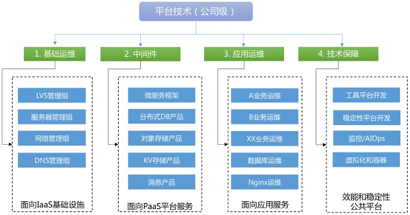

SRE [1] #
- SRE = PE（Production Engineer） + 工具平台开发 + 稳定性平台开发
- 工具平台团队，负责效能工具的研发，比如实现 CMDB、运维自动化、持续交付流水线以 及部分技术运营报表的实现，为基础运维和应用运维提供效率平台支持。
- 稳定性平台团队，负责稳定性保障相关的标准和平台，比如监控、服务治理相关的限流降 级、全链路跟踪、容量压测和规划。
组织架构图 [1] #

故障复盘 [2] #
- 黄金三问
- 第一问：故障原因有哪些？
- 第二问：我们做什么，怎么做才能确保下次不会再出现类似故障？
- 第三问：当时如果我们做了什么，可以用更短的时间恢复业务？
- 故障判定的三原则
- 健壮性原则。
- 第三方默认无责。
- 分段判定原则。
- 5W 分析法
Google SRE Principle [5] #
- 运营是软件问题
- 服务水平目标SLO
- 减少琐事 用自动化的方式减少琐事
- 自动化
- ** 统一环境， IaC CaC， ** IaC: Terraform, Ansible, Pulumi
- 生产环境中进行测试
- 统一 版本管理，制品库，cmdb
- 可观测性
- 降低失败成本 复盘 从失败中学习
- 共享所有权 个人安全，责任共担
- 拥抱风险 + 错误预算
Google SRE 实践总结 [5] #
- 确保长期关注研发工作
- 在保障SLO的前提下最大化迭代速度
- 监控系统 + insight，根因
- 应急事件处理
- 变更管理 ITIL
- 需求预测和容量规划 + AIOps
- 资源部署
- 效率与性能
参考 #
- 《09｜案例：互联网典型的SRE组织架构是怎样的？》 赵成
- 《08｜故障复盘：黄金三问与判定三原则》 赵成
- xxx
- SRE 的工作介绍 SRE大佬 未
- SRE核心概念与可观测性介绍 中国DevOps社区 刘峰
+《SRE google 运维解密》